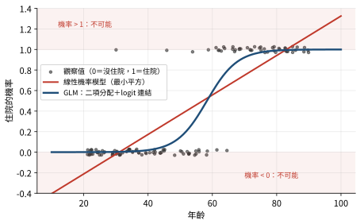
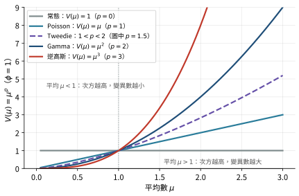
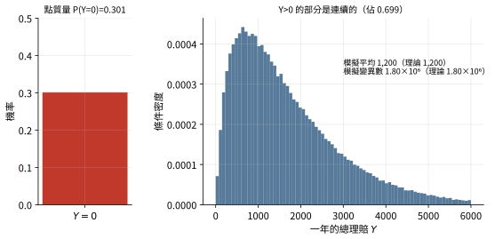
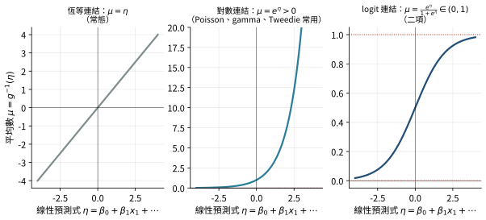
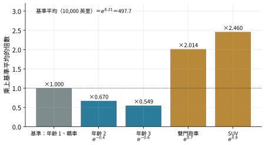
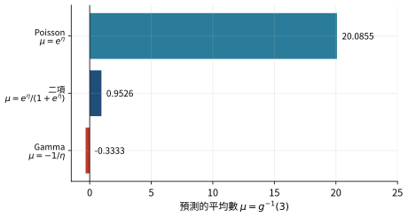
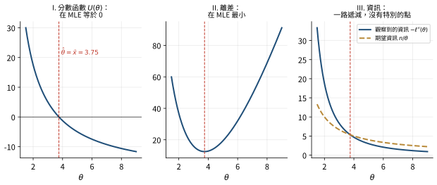
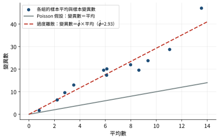

11.1 為什麼需要廣義線性模型 一、線性迴歸碰到的三種反應變數
第 2～10 章的線性迴歸假設 \(y_i=\beta_0+\beta_1x_{i1}+\cdots+\varepsilon_i\)，\(\varepsilon_i\sim N(0,\sigma^2)\)。也就是說：反應變數是常態、平均數是解釋變數的線性組合、變異數固定。保險資料常常三個都不成立：
反應變數
可能的值
線性迴歸的問題
會不會住院（是／否）
0 或 1
只有兩個值，不可能是常態；預測值可能小於 0 或大於 1
一年的理賠次數
0, 1, 2, …
非負整數；平均越大、變異數越大
一筆理賠的金額
正數，右偏
不可能是負的；平均越大、變異數越大（大約和平均的平方成正比）
二、線性機率模型的三個缺點
處理是／否的最直接做法，是把「是」記成 1、「否」記成 0，直接做線性迴歸，預測值當成機率 \(\pi\)。這叫線性機率模型 （linear probability model）。它有三個缺點，講義和 SOA 樣題第 20 題都考：
反應變數不是常態 ：\(y\) 只有 0 和 1 兩個值，殘差分析（第 5 章 ）失去意義。預測值會跑出 \([0,1]\) ：直線沒有上下限，\(x\) 夠大或夠小時一定超出，但機率不可能小於 0 或大於 1。變異數不是固定的 ：\(y\) 是 Bernoulli，\(\mathrm{Var}(y)=\pi(1-\pi)\)，隨平均數改變。

120 筆模擬資料：住院機率隨年齡上升。紅線是線性機率模型（最小平方直線），年齡 10 歲時預測出 −0.40、100 歲時預測出 1.33，都是不可能的機率。藍線是 GLM（二項分配＋logit 連結）配適的 S 形曲線，永遠在 0 和 1 之間。 三、GLM 的三個組成
GLM 保留線性迴歸「好用」的部分（解釋變數的線性組合），把「不合用」的部分放寬：
隨機成分 （random component）：\(y_i\) 服從線性指數族 （11.2 節 ）裡的某個分配，例如常態、Poisson、二項、gamma、逆高斯。系統成分 （systematic component），也就是線性預測式：\(\eta_i=\beta_0+\beta_1x_{i1}+\cdots+\beta_kx_{ik}=\sum_{j=0}^k\beta_jx_{ij}\)（\(x_{i0}=1\)）。連結函數 （link function）\(g\)：把平均數和線性預測式接起來，
\[g(\mu_i)=\eta_i=\sum_{j=0}^k\beta_jx_{ij}.\]
線性迴歸是 GLM 的特例：常態分配＋恆等連結 \(g(\mu)=\mu\)。
直覺：GLM 改的不是「線性」，是「線性預測式和平均數之間的關係」
線性迴歸說「平均數就是直線」。GLM 說「平均數經過 \(g\) 轉換之後才是直線」。例如 log 連結：\(\ln\mu=\eta\)，所以 \(\mu=e^\eta\) 永遠是正的；logit 連結：\(\ln\frac{\mu}{1-\mu}=\eta\)，所以 \(\mu\) 永遠在 0 和 1 之間。連結函數的工作，就是把「可以是任何實數」的 \(\eta\) 送進反應變數合理的範圍。
考試怎麼考：選分配與連結
SOA 樣題第 7 題型 ：「住院或沒住院」是二元結果，用二項分配＋logit 連結 。常態分配不對（只有兩個值）；二項配「線性」連結也不對（預測值會超出 0～1）。SOA 樣題第 20 題型 ：線性模型預測出小於 0、大於 1 的機率，正確做法是用 logit 轉換 。刪掉資料或把預測值截在 0、1 都會讓估計偏誤；Poisson 的典型連結是 log，只保證正數，不保證小於 1。常見配對：理賠次數 → Poisson＋log；理賠金額 → gamma＋log（或逆高斯＋log）；純保費（很多 0、其餘連續）→ Tweedie＋log；二元 → 二項＋logit。
觀念題（4 題，仿 SOA 樣題的觀念判斷與小計算，含跨章節）
觀念 觀念題 C11.1-1 仿 SOA 樣題・跨章：第 2 章・回到本節開頭 An analyst models whether a policyholder files a claim (1 = yes, 0 = no) using ordinary least squares on several predictors (a linear probability model).
Determine which of the following statements about this model is/are true.
I. Some fitted values may be less than 0 or greater than 1.
II. The variance of the response is constant across observations.
III. The response is not normally distributed, so residual analysis is not meaningful.
(A) II only
(B) III only
(C) I and II only
(D) I and III only
(E) The correct answer is not given by (A), (B), (C), or (D).
隱藏解答 中文題意
以最小平方對 0／1 的反應變數做迴歸（線性機率模型）。下列哪些正確？
I. 部分配適值可能小於 0 或大於 1。
II. 反應變數的變異數在各觀察值之間固定。
III. 反應變數不是常態，殘差分析沒有意義。
解析
I 對：直線沒有上下限（本章圖「線性機率模型」中，10 歲預測 −0.40、100 歲預測 1.33）。
II 錯：Bernoulli 的變異數是 \(\pi(1-\pi)\)，隨平均數改變。這正是線性機率模型的第三個缺點。
III 對：\(y\) 只有兩個值，不可能是常態。
An insurer wants to model the annual number of claims for each auto policy as a function of driver characteristics.
Determine the most appropriate combination of response distribution and link function.
(A) Poisson distribution, log link
(B) Normal distribution, identity link
(C) Binomial distribution, logit link
(D) Gamma distribution, log link
(E) Poisson distribution, logit link
隱藏解答 中文題意
保險公司要用駕駛人特徵建模每張汽車保單一年的理賠次數。最適合的分配與連結組合是哪一個？
解析
次數是非負整數，用 Poisson；log 連結讓平均數 \(e^\eta\) 一定為正，而且是 Poisson 的典型連結。
(B) 常態可能預測出負數；(C) 二項是二元結果；(D) gamma 是正的連續變數（理賠金額）；(E) logit 會把平均數限制在 0 和 1 之間，但次數的平均可以大於 1。
Determine which of the following is NOT one of the three components of a generalized linear model.
(A) A constant variance for every observation
(B) A response distribution from the linear exponential family
(C) A linear predictor in the explanatory variables
(D) A monotonic, differentiable link function
(E) All of (A) through (D) are components of a GLM
隱藏解答 解析
GLM 的三個組成：隨機成分（線性指數族的分配）、系統成分（線性預測式）、連結函數。
GLM 的重點之一就是允許 變異數隨平均數改變（\(\mathrm{Var}=\phi V(\mu)\)），「每筆觀察的變異數相同」是線性迴歸的假設，不是 GLM 的組成。
Determine which of the following statements about generalized linear models is/are true.
I. Ordinary linear regression is a GLM with a normal response and the identity link.
II. The link function is applied to each observed response \(y_i\) before fitting.
III. A GLM requires the mean of the response to be a linear function of the predictors.
(A) II only
(B) III only
(C) I and II only
(D) I and III only
(E) The correct answer is not given by (A), (B), (C), or (D).
隱藏解答 中文題意
下列哪些正確？
I. 一般線性迴歸是常態反應、恆等連結的 GLM。
II. 連結函數是在配適前套用在每個觀察值 \(y_i\) 上。
III. GLM 要求反應變數的平均數是解釋變數的線性函數。
解析
I 對。
II 錯：連結函數作用在平均數 \(\mu_i\) 上，不是作用在 \(y_i\) 上。例如 Poisson 的 \(y_i=0\) 時 \(\ln y_i\) 不存在，但 \(\ln\mu_i\) 沒問題。這也是 GLM 和「先把 \(y\) 取 log 再做線性迴歸」不同的地方。
III 錯：線性的是 \(g(\mu_i)\)，不是 \(\mu_i\) 本身。
11.2 線性指數族：GLM 的分配 一、定義
線性指數族 （linear exponential family）的機率密度（離散時是機率函數）可以寫成
\[f(y;\theta,\phi)=\exp\!\left[\frac{y\theta-b(\theta)}{\phi}+S(y,\phi)\right].\tag{11.1}\]
\(\theta\)：我們關心的參數（parameter of interest，也叫自然參數）。
\(\phi\)：尺度參數。
\(b(\theta)\)：只跟 \(\theta\) 有關的函數，決定了平均數和變異數 。
\(S(y,\phi)\)：只跟 \(y\)、\(\phi\) 有關，和 \(\theta\) 無關，求平均、變異數時用不到。
關鍵條件：\(y\) 和 \(\theta\) 只在 \(y\theta\) 這一項一起出現，而且 \(y\) 是一次方 ，沒有平方、沒有取對數、沒有倒數。「線性」指的就是這件事。
線性指數族的成員：二項、常態、Poisson、指數、gamma、逆高斯、負二項（固定形狀參數時）、幾何、Tweedie。
二、怎麼把一個分配寫成線性指數族：四步驟
把整個密度寫成 \(\exp(\ln f)\)。
展開 \(\ln f\)，找出 \(y\) 和參數相乘的那一項。
讓那一項變成 \(y\theta/\phi\)，決定 \(\theta\)（以及 \(\phi\)）。
剩下只含參數的部分是 \(-b(\theta)/\phi\)；只含 \(y\)（和 \(\phi\)）的丟進 \(S\)。
例一：Poisson。 \(f(y)=e^{-\lambda}\lambda^y/y!\)。
\[f(y)=\exp(-\lambda+y\ln\lambda-\ln y!).\]
\(y\) 乘上 \(\ln\lambda\)，所以 \(\theta=\ln\lambda\)，\(\lambda=e^\theta\)：
\[f(y)=\exp(y\theta-e^\theta-\ln y!).\]
對照 (11.1)：\(\phi=1\)，\(b(\theta)=e^\theta\)，\(S(y,\phi)=-\ln y!\)。
例二：常態。 兩個參數 \(\mu,\sigma^2\)，選 \(\mu\) 當關心的參數。
\[f(y)=\exp\!\left[-\frac{(y-\mu)^2}{2\sigma^2}-\ln\sigma-\tfrac12\ln2\pi\right]=\exp\!\left[\frac{y\mu-\tfrac12\mu^2}{\sigma^2}-\frac{y^2}{2\sigma^2}-\tfrac12\ln\sigma^2-\tfrac12\ln2\pi\right].\]
\(\theta=\mu\)，\(\phi=\sigma^2\)，\(b(\theta)=\tfrac12\theta^2\)，其他（含 \(y^2\) 的那項）放進 \(S\)。注意 \(y^2/(2\sigma^2)\) 不含 \(\theta\)，所以不違反條件。
例三：Bernoulli（二項，一次試驗）。 \(f(y)=\pi^y(1-\pi)^{1-y}\)，\(y=0,1\)。
\[f(y)=\exp\!\left[y\ln\frac{\pi}{1-\pi}+\ln(1-\pi)\right].\]
\(\theta=\ln\frac{\pi}{1-\pi}\)（log odds），\(\pi=\frac{e^\theta}{1+e^\theta}\)，\(\ln(1-\pi)=-\ln(1+e^\theta)\)，所以 \(b(\theta)=\ln(1+e^\theta)\)，\(\phi=1\)。
例四：gamma。 用平均數 \(\mu\) 和形狀參數 \(\alpha\) 寫：\(f(y)=\frac{1}{\Gamma(\alpha)}\left(\frac{\alpha}{\mu}\right)^\alpha y^{\alpha-1}e^{-\alpha y/\mu}\)。
\[\ln f=-\frac{\alpha y}{\mu}-\alpha\ln\mu+\underbrace{\alpha\ln\alpha+(\alpha-1)\ln y-\ln\Gamma(\alpha)}_{S}=\frac{y(-1/\mu)-\ln\mu}{1/\alpha}+S.\]
\(\theta=-1/\mu\)，\(\phi=1/\alpha\)，\(b(\theta)=\ln\mu=-\ln(-\theta)\)。
例五：逆高斯。 \(f(y)=\sqrt{\frac{\lambda}{2\pi y^3}}\exp\!\left[-\frac{\lambda(y-\mu)^2}{2\mu^2y}\right]\)。把平方展開：
\[-\frac{\lambda(y^2-2\mu y+\mu^2)}{2\mu^2y}=\lambda\left[y\left(-\frac{1}{2\mu^2}\right)+\frac1\mu\right]-\frac{\lambda}{2y}.\]
\(\theta=-\frac{1}{2\mu^2}\)，\(\phi=1/\lambda\)，\(b(\theta)=-\frac1\mu=-\sqrt{-2\theta}\)。
易錯提醒
\(b(\theta)\) 只要求到「差一個常數倍」：題目常問「\(b(\theta)\) 是哪個函數的倍數」，例如幾何分配的 \(b(\theta)=-\ln(1-e^\theta)\)。
定義域跟著參數變的分配不是線性指數族 ，例如 \(f(y)=\theta y^{-\theta-1}\)，\(y>\theta\)（單參數 Pareto）。另外它取 log 後和 \(\theta\) 相乘的是 \(\ln y\)，不是 \(y\)。指數分配 \(f(y)=\theta e^{-y\theta}\) 是線性指數族（\(y\) 乘上 \(-\theta\)），而且是 gamma 在 \(\alpha=1\) 的特例。
三、平均數與變異數：\(b'(\theta)\) 和 \(\phi\,b''(\theta)\)
\[E(Y)=b'(\theta),\qquad \mathrm{Var}(Y)=\phi\,b''(\theta).\tag{11.2, 11.3}\]
推導：為什麼 \(E(Y)=b'(\theta)\)、\(\mathrm{Var}(Y)=\phi b''(\theta)\)
出發點 ：密度積分（或加總）等於 1，對每一個 \(\theta\) 都成立：
\[\int\exp\!\left[\frac{y\theta-b(\theta)}{\phi}+S(y,\phi)\right]dy=1 .\]
對 \(\theta\) 微分一次 （積分和微分可以交換）。指數裡對 \(\theta\) 的導數是 \(\frac{y-b'(\theta)}{\phi}\)，所以
\[\int\frac{y-b'(\theta)}{\phi}f(y)\,dy=0\ \Longrightarrow\ E(Y)-b'(\theta)=0\ \Longrightarrow\ E(Y)=b'(\theta).\]
再微分一次 。對 \(\frac{y-b'(\theta)}{\phi}f(y)\) 用乘法法則：
\[\int\left[-\frac{b''(\theta)}{\phi}+\frac{(y-b'(\theta))^2}{\phi^2}\right]f(y)\,dy=0 .\]
第二項的積分是 \(\mathrm{Var}(Y)/\phi^2\)（因為 \(b'(\theta)=E(Y)\)），所以
\[\frac{\mathrm{Var}(Y)}{\phi^2}=\frac{b''(\theta)}{\phi}\ \Longrightarrow\ \mathrm{Var}(Y)=\phi\,b''(\theta).\]
驗算。 Poisson：\(b=e^\theta\)，\(b'=e^\theta=\lambda\)，\(b''=e^\theta=\lambda\)，\(\phi=1\)，變異數 \(\lambda\)。常態：\(b=\theta^2/2\)，\(b'=\theta=\mu\)，\(b''=1\)，變異數 \(\phi=\sigma^2\)。gamma：\(b=-\ln(-\theta)\)，\(b'=-1/\theta=\mu\)，\(b''=1/\theta^2=\mu^2\)，變異數 \(\phi\mu^2=\mu^2/\alpha\)。逆高斯：\(b'=(-2\theta)^{-1/2}=\mu\)，\(b''=(-2\theta)^{-3/2}=\mu^3\)，變異數 \(\phi\mu^3\)。
四、變異數函數：變異數怎麼跟著平均數變
把 \(b''(\theta)\) 寫成 \(\mu\) 的函數，叫變異數函數 \(V(\mu)\)，於是 \(\mathrm{Var}(Y)=\phi V(\mu)\)。
分配
\(V(\mu)\)
冪次 \(p\)（\(V=\mu^p\)）
\(\phi\)
常態
\(1\)
0
\(\sigma^2\)
Poisson
\(\mu\)
1
1
Tweedie
\(\mu^p\)
\(1<p<2\)
估計
gamma
\(\mu^2\)
2
\(1/\alpha\)
逆高斯
\(\mu^3\)
3
\(1/\lambda\)
二項（比例）
\(\mu(1-\mu)\)
不是冪次
1（\(m\) 次試驗時 \(1/m\)）

變異數函數 \(V(\mu)=\mu^p\)（\(\phi=1\)）。所有曲線都經過 \((1,1)\)。平均數大於 1 時，\(p\) 越大變異數長得越快：逆高斯（\(p=3\)）最快，常態（\(p=0\)）不動。選分配其實就是在選「變異數怎麼跟著平均數變」。
例題 11-1：從給定的密度求變異數（習題 11.6）
\(f(y;u,\phi)=\exp\!\left(-\frac{25y}{u^2}+\frac{50}{u}+S(y,\phi)\right)\)，求 \(u=10\) 時的 \(\mathrm{Var}(Y)\)。
讀出 \(\theta\) ：和 \(y\) 相乘的是 \(-25/u^2\)，令 \(\theta=-25/u^2\)，\(\phi=1\)。則 \(u=5/\sqrt{-\theta}\)。
讀出 \(b\) ：\(-b(\theta)=50/u=10\sqrt{-\theta}\)，所以 \(b(\theta)=-10\sqrt{-\theta}\)。
微分 ：\(b'(\theta)=5(-\theta)^{-1/2}\)（\(u=10\) 時 \(\theta=-0.25\)，\(b'=5/0.5=10=u\)，檢查無誤）；\(b''(\theta)=2.5(-\theta)^{-3/2}\)。
代入 ：\(\mathrm{Var}(Y)=2.5(0.25)^{-3/2}=2.5/0.125=20\)。
（這其實是逆高斯：\(\mathrm{Var}=\mu^3/\lambda=1000/50=20\)。）
五、Tweedie 分配：純保費用的分配
保險的總理賠 （一張保單一年的理賠總額）\(S=X_1+\cdots+X_N\) 是複合分配。Tweedie 分配 是：
次數 \(N\sim\) Poisson，
每筆金額 \(X_j\sim\) gamma，彼此獨立，也和 \(N\) 獨立。
它屬於線性指數族，\(\mathrm{Var}(Y)=\phi\mu^p\)，\(1<p<2\)。特性：
混合型分配 （mixed distribution）：在 0 有一個點質量 \(\Pr(Y=0)=\Pr(N=0)=e^{-\lambda}\)，其餘部分是連續的。也可以看成 gamma 的混合 ：已知 \(N=n\) 時，\(Y\) 是 \(n\) 個 gamma 的和，仍是 gamma；權重是 Poisson 機率。
正因為有一大堆 0、其餘是連續的正數，它很適合當純保費 （pure premium）的分配。

模擬 20 萬張保單：次數 Poisson（\(\lambda=1.2\)），每筆金額 gamma（形狀 2、尺度 500）。左邊是 \(Y=0\) 的點質量 0.301（理論 \(e^{-1.2}=0.301\)），右邊是 \(Y>0\) 時的連續部分。平均 1,200、變異數 \(1.80\times10^6\)，都和理論值一致。這組參數對應的冪次是 \(p=(\alpha+2)/(\alpha+1)=4/3\)，落在 1 和 2 之間。
考試怎麼考：線性指數族
判斷是不是成員 ：取 log，看和參數相乘的是不是「\(y\) 本身」；定義域含參數的直接排除（S-F16:33、S-F16:38 題型）。求 \(b(\theta)\) ：四步驟。選擇題的選項常是 \(\pm\ln(1\pm e^{\pm\theta})^2\) 這類，只差正負號，每一步都要小心。給 \(b(\theta)\)、\(\theta\)、\(\phi\) 求平均數 ：\(E(Y)=b'(\theta)\)，和 \(\phi\) 無關（S-F15:31）。冪次 \(p\) （S-F17:32）：常態 0、Poisson 1、Tweedie（複合 Poisson-gamma）介於 1 和 2、gamma 2、逆高斯 3 （不是 −1）。
這一節的精選習題
The following discrete distribution is in the linear exponential family:
\[f(y)=(y+1)(1-p)^2p^y\qquad y=0,1,2,\ldots\]
Determine \(b(\theta)\).
(A) \(\ln(1+e^\theta)^2\)
(B) \(\ln(1+e^{-\theta})^2\)
(C) \(-\ln(1+e^{-\theta})^2\)
(D) \(\ln(1-e^{-\theta})^2\)
(E) \(-\ln(1-e^\theta)^2\)
隱藏解答 中文題意
下列離散分配屬於線性指數族：\(f(y)=(y+1)(1-p)^2p^y\)，\(y=0,1,2,\ldots\)。求 \(b(\theta)\)。
(A) \(\ln(1+e^\theta)^2\)
(B) \(\ln(1+e^{-\theta})^2\)
(C) \(-\ln(1+e^{-\theta})^2\)
(D) \(\ln(1-e^{-\theta})^2\)
(E) \(-\ln(1-e^\theta)^2\)
解析
\[f(y)=\exp\big(y\ln p+\ln(y+1)+2\ln(1-p)\big).\]
令 \(\theta=\ln p\)，\(y\) 單獨和 \(\theta\) 相乘，符合條件。\(\ln(y+1)\) 只含 \(y\)，放進 \(S\)。
\(-b(\theta)=2\ln(1-p)=2\ln(1-e^\theta)\)，所以
\[b(\theta)=-2\ln(1-e^\theta)=-\ln(1-e^\theta)^2 .\]
（這是 \(r=2\) 的負二項分配。）
易錯
五個選項只差正負號與 \(e^{\pm\theta}\)。\(\theta=\ln p\) 所以是 \(e^{\theta}\)；\(b\) 前面有負號，因為 \(\ln(1-p)\) 在指數裡帶正號。
[S-F16:31] Within the context of Generalized Linear Models, suppose that \(y\) has an exponential distribution with probability density function expressed as:
\[f(y)=\frac1\mu\exp\left(-\frac y\mu\right)\quad\text{for }y>0\]
Determine the variance of \(y\) in terms of \(\mu\).
(A) \(1/\mu\)
(B) \(\sqrt\mu\)
(C) \(\mu\)
(D) \(\mu^2\)
(E) The correct answer is not given by (A), (B), (C), or (D).
隱藏解答 中文題意
（2016 秋季 S 第 31 題）在 GLM 的架構下，\(y\) 服從指數分配，\(f(y)=\frac1\mu\exp\!\left(-\frac y\mu\right)\)，\(y>0\)。以 \(\mu\) 表示 \(y\) 的變異數。
(A) \(1/\mu\) (B) \(\sqrt\mu\) (C) \(\mu\) (D) \(\mu^2\) (E) 以上皆非
解析
直接知道 ：指數分配的變異數是平均數的平方，這裡平均數是 \(\mu\)，變異數 \(\mu^2\)。
用 GLM 公式 ：\(f(y)=\exp\big(y(-1/\mu)-\ln\mu\big)\)。\(\theta=-1/\mu\)，\(\phi=1\)，\(b(\theta)=\ln\mu=-\ln(-\theta)\)。\(b''(\theta)=1/\theta^2=\mu^2\)，\(\mathrm{Var}=\phi b''=\mu^2\)。
指數分配是 gamma 在形狀 1 的特例，gamma 的 \(V(\mu)=\mu^2\)。
For a distribution in the linear exponential family, you are given
\[f(y;u,\phi)=\exp\left(-\frac{25y}{u^2}+\frac{50}{u}+S(y,\phi)\right)\]
Determine \(\mathrm{Var}(Y)\), the variance of the distribution, when \(u=10\).
隱藏解答 中文題意
線性指數族中的分配：
求 \(u=10\) 時的 \(\mathrm{Var}(Y)\)。
（數據、圖表與選項見上方英文題目。）
解析
讀出 \(\theta\)、\(\phi\) ：令 \(\theta=-25/u^2\)，\(\phi=1\)，則 \(u=5/\sqrt{-\theta}\)。
讀出 \(b\) ：\(\frac{50}{u}=10\sqrt{-\theta}\)，它在指數裡是 \(-b(\theta)\)，所以 \(b(\theta)=-10\sqrt{-\theta}\)。
微分 ：
\[b'(\theta)=-10\cdot\tfrac12(-\theta)^{-1/2}\cdot(-1)=5(-\theta)^{-1/2},\]
\[b''(\theta)=5\cdot\left(-\tfrac12\right)(-\theta)^{-3/2}\cdot(-1)=2.5(-\theta)^{-3/2}.\]
代入 ：\(u=10\) 時 \(\theta=-0.25\)。先檢查 \(b'=5/0.5=10=u\)。\(\mathrm{Var}(Y)=1\times2.5(0.25)^{-3/2}=2.5/0.125=20\)。
（這是 \(\lambda=50\) 的逆高斯，\(\mathrm{Var}=u^3/\lambda=20\)。）
易錯
\(-\theta\) 對 \(\theta\) 微分會多一個 \(-1\)，連鎖律兩次都不能漏。
[Based on S-F16:33] You are given the following two probability density functions:
(i) \(f(y;\theta)=\theta y^{-\theta-1}\) for \(y>\theta\)
(ii) \(f(y;\theta)=\theta e^{-y\theta}\) for \(y>0\) and \(\theta>0\)
Which of these distributions are in the linear exponential family?
隱藏解答 中文題意
（改編自 2016 秋季 S 第 33 題）兩個密度：
(i) \(f(y;\theta)=\theta y^{-\theta-1}\)，\(y>\theta\)
(ii) \(f(y;\theta)=\theta e^{-y\theta}\)，\(y>0\)、\(\theta>0\)
哪些屬於線性指數族？
解析
(i) 不是 ：定義域 \(y>\theta\) 跟著參數變。而且取 log 得 \(\exp\big(\ln\theta-(\theta+1)\ln y\big)\)，和 \(\theta\) 相乘的是 \(\ln y\)，不是 \(y\)。
(ii) 是 ：它是指數分配，\(\exp(\ln\theta-y\theta)\)，和參數相乘的是 \(y\) 本身。
[S-F15:31] Given the following information:
(i) \(Y\) is a random variable in the linear exponential family \(f(y)=\exp\left[\dfrac{y\theta-b(\theta)}{\phi}+S(y,\phi)\right]\)
(ii) \(b(\theta)=-\sqrt{-2\theta}\)
(iii) \(\theta=-0.3\)
(iv) \(\phi=1.6\)
Calculate \(E[Y]\).
(A) Less than −1
(B) At least −1, but less than 0
(C) At least 0, but less than 1
(D) At least 1, but less than 2
(E) At least 2
隱藏解答 中文題意
（2015 秋季 S 第 31 題）\(Y\) 屬於線性指數族，\(f(y)=\exp\!\left[\frac{y\theta-b(\theta)}{\phi}+S(y,\phi)\right]\)，\(b(\theta)=-\sqrt{-2\theta}\)，\(\theta=-0.3\)，\(\phi=1.6\)。求 \(E[Y]\)。
(B) 至少 −1，小於 0
(C) 至少 0，小於 1
(D) 至少 1，小於 2
(E) 至少 2
（數據、圖表與選項見上方英文題目。）
解析
\(E[Y]=b'(\theta)\)。
\[b'(\theta)=-\tfrac12(-2\theta)^{-1/2}(-2)=(-2\theta)^{-1/2}.\]
代入 \(\theta=-0.3\)：\(E[Y]=0.6^{-1/2}=1.291\)。
\(\phi=1.6\) 只影響變異數，求平均數用不到。
易錯
看到 \(\phi\) 就想乘進去。平均數是 \(b'(\theta)\)，沒有 \(\phi\)。
[S-F17:32] Given a family of distributions where the variance is related to the mean through a power function: \(\mathrm{Var}(Y)=a\,E[Y]^p\). One can characterize members of the exponential family of distributions using this formula.
You are given the following statements on the value of \(p\) for a given distribution:
I. Normal (Gaussian) distribution, \(p=0\)
II. Compound Poisson-gamma distribution, \(1<p<2\)
III. Inverse Gaussian distribution, \(p=-1\)
Determine which of the above statements are correct.
(A) I only
(B) I and II only
(C) I and III only
(D) II and III only
(E) The correct answer is not given by (A), (B), (C), or (D).
隱藏解答 中文題意
（2017 秋季 S 第 32 題）一族分配的變異數和平均數的關係為冪次函數 \(\mathrm{Var}(Y)=aE[Y]^p\)，可以用來描述指數族的成員。
I. 常態分配，\(p=0\)
II. 複合 Poisson-gamma 分配，\(1<p<2\)
III. 逆高斯分配，\(p=-1\)
哪些正確？
(A) 只有 I (B) 只有 I、II (C) 只有 I、III (D) 只有 II、III (E) 以上皆非
解析
I 對：常態的變異數不隨平均數變，\(p=0\)。II 對：複合 Poisson-gamma 就是 Tweedie，\(1<p<2\)。III 錯：逆高斯的變異數是 \(\phi\mu^3\)，\(p=3\)。
觀念題（7 題，仿 SOA 樣題的觀念判斷與小計算，含跨章節）
A random variable \(Y\) belongs to the linear exponential family with \(b(\theta)=\ln(1+e^\theta)\), \(\phi=1\), and \(\theta=0.4\).
Calculate \(\mathrm{Var}(Y)\).
(A) 0.2403
(B) 0.4013
(C) 0.5987
(D) 0.3584
(E) 1.4918
隱藏解答 中文題意
線性指數族，\(b(\theta)=\ln(1+e^\theta)\)、\(\phi=1\)、\(\theta=0.4\)。求 \(\mathrm{Var}(Y)\)。
解析
這是 Bernoulli。\(b'(\theta)=\frac{e^\theta}{1+e^\theta}\)，\(\theta=0.4\) 時 \(\mu=\frac{1.4918}{2.4918}=0.5987\)。
\(b''(\theta)=\frac{e^\theta}{(1+e^\theta)^2}=\mu(1-\mu)=0.5987\times0.4013=0.2403\)。
(C) 是平均數 \(b'\)；(B) 是 \(1-\mu\)；(E) 是 \(e^\theta\)。
易錯
\(b''\) 可以直接寫成 \(\mu(1-\mu)\)，不用硬微分。
A gamma GLM has dispersion parameter \(\phi=0.25\). For a particular policy, the fitted mean claim size is 50.
Calculate the variance of the claim size for this policy.
(A) 12.5
(B) 625
(C) 2,500
(D) 10,000
(E) 200
隱藏解答 中文題意
gamma GLM，\(\phi=0.25\)，某保單的配適平均理賠金額為 50。求其理賠金額的變異數。
解析
gamma 的變異數 \(\phi\mu^2=0.25\times2500=625\)。
(A) 是 \(\phi\mu\)（誤用 Poisson 的變異數函數）；(C) 忘了 \(\phi\)；(D) 是 \(\mu^2/\phi\)（把 \(\phi\) 當成形狀參數 \(\alpha\)）；(E) 是 \(\mu/\phi\)。
易錯
\(\phi=1/\alpha\)。形狀參數 \(\alpha=4\)，變異數 \(\mu^2/\alpha=625\)，兩種寫法一致。
Determine which of the following distributions is NOT a member of the linear exponential family (with its usual parameter of interest).
(A) Poisson with mean \(\lambda\)
(B) Uniform on \((0,\theta)\)
(C) Gamma with mean \(\mu\) and fixed shape
(D) Inverse Gaussian with mean \(\mu\)
(E) Binomial with fixed \(m\) and probability \(\pi\)
隱藏解答 解析
\((0,\theta)\) 上的均勻分配，定義域隨參數改變，密度 \(1/\theta\) 也無法寫成 \(\exp[(y\theta-b)/\phi+S]\) 的形式。
其他四個都在 11.2 節 寫成了線性指數族。
For a distribution in the linear exponential family \(f(y)=\exp\left[\frac{y\theta-b(\theta)}{\phi}+S(y,\phi)\right]\), determine which of the following statements is/are true.
I. \(E(Y)\) depends on the scale parameter \(\phi\).
II. \(\mathrm{Var}(Y)=\phi\,b''(\theta)\).
III. The function \(S(y,\phi)\) affects the mean of \(Y\).
(A) II only
(B) III only
(C) I and II only
(D) I and III only
(E) The correct answer is not given by (A), (B), (C), or (D).
隱藏解答 中文題意
對線性指數族，下列哪些正確？
I. \(E(Y)\) 和尺度參數 \(\phi\) 有關。
II. \(\mathrm{Var}(Y)=\phi b''(\theta)\)。
III. \(S(y,\phi)\) 會影響 \(Y\) 的平均數。
解析
I 錯：\(E(Y)=b'(\theta)\)，沒有 \(\phi\)。II 對。III 錯：推導 \(E(Y)\) 時對 \(\theta\) 微分，\(S\) 不含 \(\theta\)，微分後消失。
Determine which of the following statements about the Tweedie distribution is/are true.
I. It has a point mass at zero.
II. Its variance is proportional to \(\mu^p\) with \(1<p<2\).
III. It is continuous everywhere on \([0,\infty)\).
(A) III only
(B) I and II only
(C) I and III only
(D) II and III only
(E) The correct answer is not given by (A), (B), (C), or (D).
隱藏解答 中文題意
關於 Tweedie 分配，下列哪些正確？
I. 在 0 有一個點質量。
II. 變異數和 \(\mu^p\) 成正比，\(1<p<2\)。
III. 在 \([0,\infty)\) 上處處連續。
解析
I 對：沒有理賠（\(N=0\)）時 \(Y=0\)，機率 \(e^{-\lambda}\)。II 對。III 錯：0 有點質量，所以是混合型分配，只有在 \(Y>0\) 的部分是連續的。
A random variable \(Y\) belongs to the linear exponential family with \(b(\theta)=-\ln(-\theta)\), \(\theta=-0.02\), and \(\phi=0.5\).
Calculate \(\mathrm{Var}(Y)\).
(A) 25
(B) 50
(C) 625
(D) 1,250
(E) 2,500
隱藏解答 中文題意
\(b(\theta)=-\ln(-\theta)\)、\(\theta=-0.02\)、\(\phi=0.5\)。求 \(\mathrm{Var}(Y)\)。
解析
這是 gamma。\(b'(\theta)=-1/\theta=50\)（平均數）；\(b''(\theta)=1/\theta^2=2500\)。
\(\mathrm{Var}=\phi b''=0.5\times2500=1250\)。
(B) 是平均數；(E) 忘了 \(\phi\)；(A) 是 \(\phi\mu\)。
Four GLMs each have dispersion parameter \(\phi=1\) and the same fitted mean \(\mu=0.5\) for an observation. The response distributions are normal, Poisson, gamma, and inverse Gaussian.
Determine the correct ordering of the variances of the response for this observation.
(A) inverse Gaussian < gamma < Poisson < normal
(B) normal < Poisson < gamma < inverse Gaussian
(C) Poisson < normal < gamma < inverse Gaussian
(D) gamma < inverse Gaussian < normal < Poisson
(E) All four variances are equal
隱藏解答 中文題意
四個 GLM 的 \(\phi\) 都是 1，某筆觀察的配適平均都是 0.5，分配分別是常態、Poisson、gamma、逆高斯。變異數由小到大的順序為何？
解析
\(\mathrm{Var}=\mu^p\)：常態 \(0.5^0=1\)、Poisson \(0.5\)、gamma \(0.25\)、逆高斯 \(0.125\)。
平均數小於 1 時，冪次越高變異數越小（本章「變異數函數」圖的左半邊）。如果平均數大於 1，順序會整個倒過來，(B) 就是那種情況。
易錯
不要背「逆高斯的變異數最大」；要看 \(\mu\) 比 1 大還是小。
11.3 連結函數與預測 一、連結函數的條件
連結函數 \(g\) 必須單調 （monotonic）而且可微分 （differentiable）。單調才有反函數，才能從 \(\eta\) 唯一地還原 \(\mu=g^{-1}(\eta)\)；可微分是估計（11.4 節 ）需要。
例如 \(g(y)=4-4y\) 可以（遞減也算單調）；\(g(y)=|y|\) 和 \(g(y)=2+3y+3(y-5)^2\) 都不行（先降後升，不單調）。
二、典型連結：讓 \(\eta=\theta\)
每一個線性指數族的分配都有一個典型連結 （canonical link）：讓線性預測式直接等於自然參數，\(\eta=\theta\)。
推導：典型連結 \(g=(b')^{-1}\)
連結的定義：\(g(\mu)=\eta\)。
典型連結：\(\eta=\theta\)，所以 \(g(\mu)=\theta\)。
線性指數族：\(\mu=b'(\theta)\)，代入得 \(g\big(b'(\theta)\big)=\theta\)。
所以 \(g\) 是 \(b'\) 的反函數：\(g=(b')^{-1}\)。
換句話說：典型連結就是「把 \(\mu\) 寫成 \(\theta\)」的那個函數 ，在 11.2 節 把分配寫成線性指數族時已經順便求出來了。
分配
\(b(\theta)\)
\(\mu=b'(\theta)\)（平均數函數）
典型連結 \(g(\mu)=\theta\)
常態
\(\theta^2/2\)
\(\theta\)
\(\mu\)（恆等）
Poisson
\(e^\theta\)
\(e^\theta\)
\(\ln\mu\)
二項
\(\ln(1+e^\theta)\)
\(\frac{e^\theta}{1+e^\theta}\)
\(\ln\frac{\mu}{1-\mu}\)（logit）
gamma
\(-\ln(-\theta)\)
\(-1/\theta\)
\(-1/\mu\)
逆高斯
\(-\sqrt{-2\theta}\)
\((-2\theta)^{-1/2}\)
\(-1/(2\mu^2)\)
連結乘上常數沒有影響（所有係數一起乘上同一個常數就抵消了），所以 gamma 的典型連結常寫成 \(1/\mu\)，逆高斯寫成 \(1/\mu^2\)。
實務上的選擇 ：常態、Poisson、二項通常就用典型連結；gamma 和逆高斯的典型連結（倒數）很難解釋，而且可能讓平均數變負，所以實務上幾乎都改用 log 連結 。

三種常用連結的平均數函數 \(\mu=g^{-1}(\eta)\)。恆等連結的 \(\mu\) 可以是任何實數；log 連結把 \(\eta\) 送到正數；logit 連結把 \(\eta\) 送到 0 和 1 之間。連結函數要讓 \(\mu\) 落在反應變數合理的範圍裡。
典型連結的特別性質：配適值的總和等於觀察值的總和
講義說「用典型連結時 GLM 的估計是不偏的」，考題（MAS-I-F19:27）也用這個說法。它實際上指的是下面這個性質。
用典型連結時，對 \(\beta_j\) 的分數方程式（11.4 節 ）會化成
\[\sum_{i=1}^n x_{ij}\,(y_i-\hat\mu_i)=0,\qquad j=0,1,\ldots,k .\]
取 \(j=0\)（截距，\(x_{i0}=1\)）：\(\sum\hat\mu_i=\sum y_i\)。如果有類別變數，每一個類別也各自成立：每一類的配適值總和等於觀察值總和 。這叫平衡性質（balance property），對費率釐訂很重要：模型算出來的總保費剛好等於實際的總損失。
所以考題問「非負的反應變數、要估計不偏」時：log 連結讓平均數為正，而以 log 為典型連結的是 Poisson ，答案選 Poisson＋log。
三、預測的計算：係數表 → \(\eta\) → \(\mu\) → 變異數
考試最常見的 GLM 題就是這一種，四個步驟：
找出這位保戶每個變數的值 。類別變數只加上「他所屬的那一類」的係數；基準類別（df 是 0、係數 0）不加。加總得到線性預測式 \(\eta=\beta_0+\sum\beta_jx_j\)。用平均數函數還原 ：\(\mu=g^{-1}(\eta)\)。（如果要）變異數 ：\(\mathrm{Var}(Y)=\phi V(\mu)\)，例如 gamma 是 \(\phi\mu^2\)、Poisson 是 \(\mu\)。
常見連結的還原方式：
連結 \(g(\mu)\)
還原 \(\mu\)
\(\ln\mu\)
\(e^\eta\)
\(\sqrt\mu\)
\(\eta^2\)
\(1/\mu\)
\(1/\eta\)
\(1/\mu^2\)
\(\eta^{-1/2}\)
\(\ln\frac{\mu}{1-\mu}\)
\(\frac{e^\eta}{1+e^\eta}\)
例題 11-2：gamma＋log 連結，求平均數與變異數（講義例 11A）
汽車保單一年的總損失，gamma 分配、log 連結，\(\phi=1/2\)。
參數
\(\hat\beta\)
截距
2.21
行駛里程
0.0004
年齡類別 1／2／3
0／−0.4／−0.6
車型 轎車／雙門跑車／SUV
0／0.7／0.9
求年齡類別 2、開雙門跑車、一年 10,000 英里的駕駛人的期望損失和變異數。
線性預測式 ：\(\eta=2.21+0.0004(10{,}000)-0.4+0.7=6.51\)。
平均數 ：\(\mu=e^{6.51}=671.83\)。
變異數 ：gamma 的 \(\mathrm{Var}=\phi\mu^2=671.83^2/2=225{,}675\)。
log 連結的係數是乘數。 因為 \(\mu=e^{\beta_0+\beta_1x_1+\cdots}=e^{\beta_0}\cdot e^{\beta_1x_1}\cdots\)，某一類的係數 \(\beta\) 代表「平均數乘上 \(e^\beta\)」，這叫相對係數 （relativity）。費率表就是這樣做出來的。

例 11A 的係數換成乘數。基準（年齡類別 1、轎車、10,000 英里）的平均是 \(e^{6.21}=497.7\)；年齡類別 2 乘 \(e^{-0.4}=0.670\)，雙門跑車乘 \(e^{0.7}=2.014\)，所以 \(497.7\times0.670\times2.014=671.8\)，和例題相同。
例題 11-3：不是 log 的連結（講義小測驗 11-1）
gamma 分配、連結 \(g(\mu)=\sqrt\mu\)。係數：截距 18.4、男性 3.1、地區 B 1.0、地區 C 3.5（女性、地區 A 是基準）。變異數是平均數平方的 3 倍。求地區 B 的男性的理賠金額變異數。
\(\eta=18.4+3.1+1.0=22.5\)；\(\sqrt\mu=22.5\)，\(\mu=506.25\)；\(\mathrm{Var}=3(506.25^2)=768{,}867\)。
例題 11-4：交互作用與反推（SOA 樣題第 45 題，習題 11.19）
考試分數（0～10 分）的 GLM，log 連結。係數：截距 −0.1、讀書時數（每 100 小時）0.5、女性 0.5、碩士 −0.1、女性×碩士 0.2。公司想給 Patricia（女性、碩士）「讓期望分數達到 6.0 所需讀書時間」的一半。求要給多少小時。
線性預測式 （\(x\) 是讀書時數，單位 100 小時）：女性、碩士兩個指標都是 1，交互作用也是 \(1\times1=1\)：
\[\eta=-0.1+0.5x+0.5-0.1+0.2=0.5+0.5x .\]
令期望分數為 6 ：\(e^{0.5+0.5x}=6\)，\(0.5+0.5x=\ln6=1.7918\)，\(x=2.5835\)（258.35 小時）。
取一半 ：\(129.2\) 小時，答案 (C)。
易錯 ：忘了交互作用項（得到 \(0.3+0.5x\)，\(x=2.98\)，一半是 149 小時，不在選項裡）；或忘了題目要「一半」。
例題 11-5：從四格預測值反推交互作用（習題 11.28）
log 連結，地區（Q 為基準、R）與性別（男為基準、女），含交互作用。預測值：男 Q 148、男 R 545、女 Q 446、女 R 4,024。求「地區 R×女性」的係數。
log 連結，所以先取對數：\(\ln148=4.9972\)、\(\ln545=6.3008\)、\(\ln446=6.1003\)、\(\ln4024=8.3000\)。
四格的線性預測式：
\[\beta_0=4.9972,\quad\beta_0+\beta_R=6.3008,\quad\beta_0+\beta_F=6.1003,\quad\beta_0+\beta_R+\beta_F+\beta_{RF}=8.3000 .\]
所以 \(\beta_{RF}=8.3000-6.3008-6.1003+4.9972=0.8961\)，答案 (B)。
換個方式看：交互作用係數是「對數尺度上的差中差」，等於 \(\ln\frac{4024\times148}{545\times446}\)。
易錯提醒
類別變數的基準類別 不加任何東西。題目中 df＝0、係數 0.00 的那一列就是基準。
數值變數要乘上它的值，而且注意單位（「收入（千）」代 100 不是 100,000；「每 100 小時」代 2.58 不是 258）。
離散參數 \(\phi\) 只影響變異數，不影響平均數 。題目給了 \(\phi\) 但問平均數，\(\phi\) 是干擾。gamma 的變異數是 \(\phi\mu^2\)；題目若說「variance parameter \(\phi=2\)」，變異數是 \(2\mu^2\)，不是 \(\mu^2/2\)。
平方根連結的還原是平方 ；倒數連結的還原是倒數 。不要順手寫 \(e^\eta\)。

習題 11.27：三個模型的係數相同（\(\beta_0=2\)、\(\beta_1=1\)、\(\beta_2=-1\)），在 \((X_1,X_2)=(2,1)\) 的線性預測式都是 \(\eta=3\)，但各用自己的典型連結還原：gamma \(-1/3\)、二項 \(0.9526\)、Poisson \(e^3=20.09\)。同一個 \(\eta\)，連結不同，預測值天差地遠。
考試怎麼考：連結與預測
連結的條件 （MAS-I-F18:27）：單調且可微分。典型連結比大小 （MAS-I-S18:25）：同一個 \(\eta\) 代進三個平均數函數比較。連結與交互作用 （MAS-I-F19:26）：四格配適值相同，恆等連結下交互作用剛好是 0（\(0.5-0.8-0.4+0.7=0\)），但換成倒數或 log 連結後，在轉換後的尺度上差中差不再是 0。大量的「GLM 輸出表」計算題 （S-F15:34、S-F16:32、S-F17:31、S-S16:31、S-S17:29、S-F15:32、MAS-I-S18:24）：照四步驟，最後一步記得用正確的平均數函數；問變異數時記得乘 \(\phi\)。SOA 樣題第 45 題型 ：含交互作用，又要反推解釋變數。
這一節的精選習題
[MAS-I-F18:27] You are given the following three functions of a random variable, \(y\), where \(-\infty<y<\infty\).
I. \(g(y)=2+3y+3(y-5)^2\)
II. \(g(y)=4-4y\)
III. \(g(y)=|y|\)
Determine which of the above could be used as link functions in a GLM.
(A) I only
(B) II only
(C) III only
(D) I, II, and III
(E) The correct answer is not given by (A), (B), (C), or (D).
隱藏解答 中文題意
（2018 秋季 MAS-I 第 27 題）\(y\) 的三個函數（\(-\infty<y<\infty\)）：
I. \(g(y)=2+3y+3(y-5)^2\)
II. \(g(y)=4-4y\)
III. \(g(y)=|y|\)
哪些可以當 GLM 的連結函數？
(A) 只有 I (B) 只有 II (C) 只有 III (D) I、II、III (E) 以上皆非
解析
連結函數必須單調且可微分。
I 是開口向上的拋物線，先降後升，不單調。II 是遞減直線，單調且可微分，可以。III 在 0 先降後升，不單調（在 0 也不可微分）。
[MAS-I-F19:27] An actuary is asked to model a non-negative response variable and requires that the model produce an unbiased estimate.
Determine which error structure and link function combination would be the best choice for the modelling request.
(A) Poisson and Identity
(B) Compound Poisson-Gamma and Log
(C) Normal and Identity
(D) Gamma and Log
(E) Poisson and Log
隱藏解答 中文題意
（2019 秋季 MAS-I 第 27 題）精算師要建模一個非負的反應變數，並要求模型的估計不偏。哪一組誤差結構與連結函數最好？
(A) Poisson 與恆等
(B) 複合 Poisson-gamma 與 log
(C) 常態與恆等
(D) gamma 與 log
(E) Poisson 與 log
解析
非負 ：log 連結的平均數函數 \(e^\eta\) 永遠為正，適合非負的反應變數；恆等連結可能預測出負數，(A)、(C) 不好。
不偏 ：用典型連結時，配適值的總和等於觀察值的總和（11.3 節 的平衡性質），這就是題目說的不偏。以 log 為典型連結的分配是 Poisson。gamma 的典型連結是倒數，Tweedie（複合 Poisson-gamma）的典型連結也不是 log，所以 (B)、(D) 雖然常用，卻不符合「不偏」。
[MAS-I-F19:26] A number of candidate models were fit using the following variables:
An intercept term
Variable A—a Yes/No indicator
Variable B—a Yes/No indicator
An interaction of Variables A and B
There are four observations, which were arranged into the following design matrix:
\[X=\begin{pmatrix}1&0&0&0\\1&1&0&0\\1&0&1&0\\1&1&1&1\end{pmatrix}\]
This data was fit using three different link functions:
I. Identity
II. Inverse
III. Log
The predicted values, given below, were the same under all three models:
\[\hat y=\begin{pmatrix}0.50\\0.80\\0.40\\0.70\end{pmatrix}\]
Determine for which of the above link functions the estimated interaction coefficient is non-zero.
(A) Identity, Inverse, and Log
(B) Identity and Inverse only
(C) Identity and Log only
(D) Inverse and Log only
(E) The correct answer is not given by (A), (B), (C), or (D).
隱藏解答 中文題意
（2019 秋季 MAS-I 第 26 題）候選模型使用：截距、變數 A（是／否）、變數 B（是／否）、A 與 B 的交互作用。四筆觀察的設計矩陣為
分別用三種連結配適：I. 恆等 II. 倒數 III. log。三個模型的預測值都相同：
哪些連結下估計的交互作用係數不是 0？
(A) 恆等、倒數、log
(B) 只有恆等、倒數
(C) 只有恆等、log
(D) 只有倒數、log
(E) 以上皆非
（數據、圖表與選項見上方英文題目。）
解析
四個參數、四筆觀察，模型剛好配適，所以 \(g(\hat y_i)\) 就等於線性預測式：
\[\beta_0=g(0.5),\quad\beta_0+\beta_A=g(0.8),\quad\beta_0+\beta_B=g(0.4),\quad\beta_0+\beta_A+\beta_B+\beta_{AB}=g(0.7).\]
所以交互作用係數是轉換後的差中差 ：\(\beta_{AB}=g(0.7)-g(0.8)-g(0.4)+g(0.5)\)。
恆等：\(0.7-0.8-0.4+0.5=0\)。
倒數：\(1.4286-1.25-2.5+2=-0.3214\ne0\)。
log：\(\ln0.7-\ln0.8-\ln0.4+\ln0.5=\ln\frac{0.7\times0.5}{0.8\times0.4}=\ln1.09375=0.0896\ne0\)。
只有倒數和 log 的交互作用不是 0。
易錯
「有沒有交互作用」要看在哪一個尺度上。原始尺度上剛好可加，取 log 或倒數之後就不可加了。
[S-F15:34] You are given the following information for a model of vehicle claim counts by policy:
(i) The response distribution is Poisson and the model has a log link function.
(ii) The model uses two categorical explanatory variables: Number of Youthful Drivers and Number of Adult Drivers.
(iii) The parameters of the model are given:
Parameter
Degrees of Freedom
\(\hat\beta\)
Intercept
1
−2.663
Number of Youthful Drivers = 0
Number of Youthful Drivers = 1
1
0.132
Number of Adult Drivers = 1
Number of Adult Drivers = 2
1
−0.031
Calculate the predicted claim count for a policy with one adult driver and one youthful driver.
(A) Less than 0.072
(B) At least 0.072, but less than 0.074
(C) At least 0.074, but less than 0.076
(D) At least 0.076, but less than 0.078
(E) At least 0.078
隱藏解答 中文題意
（2015 秋季 S 第 34 題）每張保單的車輛理賠次數模型：Poisson 分配、log 連結；兩個類別變數：年輕駕駛人數、成年駕駛人數。
求一位成年駕駛人、一位年輕駕駛人的保單的預測理賠次數。
(B) 至少 0.072，小於 0.074
(C) 至少 0.074，小於 0.076
(D) 至少 0.076，小於 0.078
(E) 至少 0.078
（數據、圖表與選項見上方英文題目。）
解析
年輕駕駛人的基準是 0 人，這張保單有 1 人，加 0.132；成年駕駛人的基準是 1 人 ，這張保單剛好 1 人，不加。
\[\eta=-2.663+0.132=-2.531,\qquad\mu=e^{-2.531}=0.07958 .\]
易錯
「一位成年駕駛人」是成年那一欄的基準類別。誤加 −0.031 會得到 \(e^{-2.562}=0.0772\)，落在 (D)。
[MAS-I-S18:24] You are given the following output from a model constructed to predict the probability that a Homeowner's policy will retain into the next policy term:
Response variable: retention; Response distribution: binomial; Link: square root; Pseudo \(R^2\): 0.6521
Parameter
df
\(\hat\beta\)
Intercept
1
0.6102
Tenure < 5 years
0
0.0000
Tenure ≥ 5 years
1
0.1320
Prior Rate Change < 0%
1
0.0160
Prior Rate Change [0%, 10%]
0
0.0000
Prior Rate Change > 10%
1
−0.0920
Amount of Insurance (000's)
1
0.0015
Let \(\pi\) be the probability that a policy with 4 years of tenure that experienced a 12% prior rate increase and has 225,000 in amount of insurance will retain into the next policy term.
Calculate the value of \(\pi\).
(A) Less than 0.60
(B) At least 0.60, but less than 0.70
(C) At least 0.70, but less than 0.80
(D) At least 0.80, but less than 0.90
(E) At least 0.90
隱藏解答 中文題意
（2018 春季 MAS-I 第 24 題）預測住宅保單續保機率的模型：反應變數 retention、二項分配、平方根連結 、pseudo \(R^2=0.6521\)。
\(\pi\) 是一張投保 4 年、前次費率調漲 12%、保險金額 225,000 的保單續保的機率。求 \(\pi\)。
(B) 至少 0.60，小於 0.70
(C) 至少 0.70，小於 0.80
(D) 至少 0.80，小於 0.90
(E) 至少 0.90
（數據、圖表與選項見上方英文題目。）
解析
二項分配的平均數就是機率 \(\pi\)。
年資 4 年：基準類別，加 0。
費率調漲 12%：屬於「> 10%」，加 −0.0920。
保險金額以千為單位：\(225\times0.0015=0.3375\)。
\(\sqrt\pi=\eta=0.6102-0.0920+0.3375=0.8557\)，\(\pi=0.8557^2=0.7322\)。
易錯
連結是平方根，不是 logit；還原用平方。pseudo \(R^2\) 是干擾資訊。
[SRM Sample Question #45] The actuarial student committee of a large firm has collected data on exam scores. A generalized linear model where the target is the exam score on a 0–10 scale is constructed using a log link, resulting in the following estimated coefficients
Predictor Variables
Coefficient
Intercept
−0.1
Study Time (in units of 100 hours)
0.5
Gender (1 for Female, 0 for Male)
0.5
Master's degree (1 for Yes, 0 for No)
−0.1
Interaction of Gender and Master's degree
0.2
The company is about to offer a job to Patricia, who is a female with a Master's degree. It would like to offer her half of the study time that will result in an expected exam score of 6.0.
Calculate the amount of study time that the company should offer Patricia.
(A) 123 hours
(B) 126 hours
(C) 129 hours
(D) 132 hours
(E) 135 hours
隱藏解答 中文題意
（SOA 樣題第 45 題）精算學生委員會蒐集了考試成績。以 0～10 分的考試分數為目標、log 連結建立 GLM，係數如下：
公司要錄取 Patricia（女性、有碩士學位），想給她「讓期望分數達到 6.0 所需讀書時間」的一半。求應該給多少讀書時間。
(A) 123 小時 (B) 126 小時 (C) 129 小時 (D) 132 小時 (E) 135 小時
（數據、圖表與選項見上方英文題目。）
解析
以 \(x\) 表示讀書時數（單位 100 小時）。女性＝1、碩士＝1、交互作用＝\(1\times1=1\)：
\[\eta=-0.1+0.5x+0.5-0.1+0.2=0.5+0.5x .\]
log 連結：\(e^{0.5+0.5x}=6\)，\(0.5+0.5x=\ln6=1.791759\)，\(x=2.583519\)。
給一半，換成小時：\(0.5\times2.583519\times100=129.18\) 小時。
易錯
漏掉交互作用得到 149 小時；忘了「一半」得到 258 小時；兩者都不在選項中，看到選項對不上就回頭檢查。
You have estimated the following generalized linear model:
\[g(\mu_i)=0.8+0.6x_{i1}+1.4x_{i2}\]
The distribution of \(Y\) satisfies \(\mathrm{Var}(Y)=0.5\,E[Y]^3\). The link function is \(g(\mu)=\sqrt\mu\).
Determine the variance of the response when \(x_1=2\) and \(x_2=1\).
隱藏解答 中文題意
估計出的 GLM 為 \(g(\mu_i)=0.8+0.6x_{i1}+1.4x_{i2}\)。\(Y\) 的分配滿足 \(\mathrm{Var}(Y)=0.5E[Y]^3\)，連結 \(g(\mu)=\sqrt\mu\)。求 \(x_1=2\)、\(x_2=1\) 時反應變數的變異數。
解析
\(\eta=0.8+0.6(2)+1.4(1)=3.4\)；平方根連結，\(\mu=3.4^2=11.56\)。
\(\mathrm{Var}=0.5\times11.56^3=0.5\times1544.80=772.40\)。
（變異數和平均數的三次方成正比，這是逆高斯。）
[S-S17:29] You are given the following GLM output:
Response variable: Pure Premium; Response distribution: Gamma; Link: log; Scale parameter (\(\phi\)): 1
Parameter
df
\(\hat\beta\)
Intercept
1
3.25
Risk Group 1
0
0.00
Risk Group 2
1
0.30
Risk Group 3
1
0.40
Vehicle Symbol 1
0
0.00
Vehicle Symbol 2
1
0.45
Calculate the variance of the pure premium for an insured in Risk Group 3 with Vehicle Symbol Group 2.
(A) Less than 3,000
(B) At least 3,000, but less than 4,000
(C) At least 4,000, but less than 5,000
(D) At least 5,000, but less than 6,000
(E) At least 6,000
隱藏解答 中文題意
（2017 春季 S 第 29 題）GLM 輸出：純保費、gamma、log 連結、尺度參數 \(\phi=1\)。
求風險組 3、車輛代號 2 的被保險人純保費的變異數。
(B) 至少 3,000，小於 4,000
(C) 至少 4,000，小於 5,000
(D) 至少 5,000，小於 6,000
(E) 至少 6,000
（數據、圖表與選項見上方英文題目。）
解析
\(\mu=e^{3.25+0.40+0.45}=e^{4.1}=60.340\)。gamma 的變異數 \(\phi\mu^2=60.340^2=3640.95\)。
A generalized linear model with an inverse Gaussian response uses the link \(g(\mu)=1/\mu^2\). The model has one explanatory variable \(x\) and an intercept. The estimated parameters are \(\mathbf b=(0.0135,\,0.0582)'\).
Let \(\mu_1\) be the mean of the response when \(x=10\). Let \(\mu_2\) be the mean of the response when \(x=11\).
Determine \(\mu_2-\mu_1\).
隱藏解答 中文題意
逆高斯反應的 GLM 使用連結 \(g(\mu)=1/\mu^2\)，有一個解釋變數 \(x\) 與截距，估計值 \(\mathbf b=(0.0135,\,0.0582)'\)。\(\mu_1\) 是 \(x=10\) 時的平均數，\(\mu_2\) 是 \(x=11\) 時的平均數。求 \(\mu_2-\mu_1\)。
解析
\(1/\mu^2=0.0135+0.0582x\)，所以 \(\mu=(0.0135+0.0582x)^{-1/2}\)。
\(x=10\)：\(\eta=0.5955\)，\(\mu_1=0.5955^{-1/2}=1.2959\)。
\(x=11\)：\(\eta=0.6537\)，\(\mu_2=0.6537^{-1/2}=1.2368\)。
\(\mu_2-\mu_1=-0.0590\)。
易錯
\(\eta\) 變大時 \(\mu\) 變小，因為連結是遞減函數；答案是負的。
[Version of S-F15:32] A GLM is used to model claim size. You are given the following information about the model:
(i) Claim size follows a Gamma distribution.
(ii) Log is the selected link function.
(iii) Variance parameter \(\phi\) is estimated to be 2.
(iv) Model Output:
Variable
\(b\)
(Intercept)
2.32
Location—Urban
0.00
Location—Rural
−0.64
Gender—Female
0.00
Gender—Male
0.76
Calculate the variance of the predicted claim size for a rural male.
(A) Less than 25
(B) At least 25, but less than 100
(C) At least 100, but less than 175
(D) At least 175, but less than 250
(E) At least 250
隱藏解答 中文題意
（改編自 2015 秋季 S 第 32 題）理賠金額的 GLM：gamma 分配、log 連結、變異數參數 \(\phi\) 估計為 2。
求鄉村男性的理賠金額變異數。
(B) 至少 25，小於 100
(C) 至少 100，小於 175
(D) 至少 175，小於 250
(E) 至少 250
（數據、圖表與選項見上方英文題目。）
解析
\(\ln\mu=2.32-0.64+0.76=2.44\)，\(\mu=e^{2.44}=11.473\)。
gamma 的變異數 \(\phi\mu^2=2(11.473^2)=263.26\)。
易錯
用 \(\mu^2/\phi=65.8\)（把 \(\phi\) 當成形狀參數 \(\alpha\)）會選 (B)。題目說 \(\phi\) 是「變異數參數」，變異數是 \(\phi\mu^2\)。
[MAS-I-S18:25] Three separate GLMs are fit using the following model form: \(\beta_0+\beta_1X_1+\beta_2X_2\).
The following error distributions were used for the three GLMs. Each model also used their canonical link functions: Model I: gamma; Model II: Poisson; Model III: binomial.
When fit to the data, all three models resulted in the same parameter estimates: \(\beta_0=2.0\), \(\beta_1=1.0\), \(\beta_2=-1.0\).
Determine the correct ordering of the models' predicted values at observed point \((X_1,X_2)=(2,1)\).
(A) I < II < III
(B) I < III < II
(C) II < I < III
(D) II < III < I
(E) The correct answer is not given by (A), (B), (C), or (D).
隱藏解答 中文題意
（2018 春季 MAS-I 第 25 題）三個 GLM 都用模型形式 \(\beta_0+\beta_1X_1+\beta_2X_2\)，各自使用典型連結：模型 I gamma、模型 II Poisson、模型 III 二項。配適後三個模型的參數估計相同：\(\beta_0=2.0\)、\(\beta_1=1.0\)、\(\beta_2=-1.0\)。在觀察點 \((X_1,X_2)=(2,1)\)，三個模型預測值的大小順序為何？
(A) I < II < III (B) I < III < II (C) II < I < III (D) II < III < I (E) 以上皆非
解析
\(\eta=2+1(2)-1(1)=3\)，再用各自典型連結的反函數：
gamma：\(g(\mu)=-1/\mu\)，\(\mu=-1/3=-0.333\)。
Poisson：\(g(\mu)=\ln\mu\)，\(\mu=e^3=20.09\)。
二項：\(g(\mu)=\ln\frac{\mu}{1-\mu}\)，\(\mu=\frac{e^3}{1+e^3}=0.9526\)。
順序 I < III < II。
易錯
gamma 的典型連結有負號（\(-1/\mu\)）。如果用 \(1/\mu\)，gamma 的預測是 \(1/3\)，順序還是 I < III < II，這題剛好不影響，但其他題可能會。
[MAS-I-S18:39] A GLM was used to estimate the expected losses per customer across gender and territory. The following information is provided:
(i) The link function selected is log.
(ii) Q is the base level for Territory.
(iii) Male is the base level for Gender.
(iv) Interaction terms are included in the model.
The GLM produced the following predicted values for expected loss per customer:
Territory Q
Territory R
Male
148
545
Female
446
4,024
Calculate the estimated beta for the interaction of Territory R and Female.
(A) Less than 0.85
(B) At least 0.85, but less than 0.95
(C) At least 0.95, but less than 1.05
(D) At least 1.05, but less than 1.15
(E) At least 1.15
隱藏解答 中文題意
（2018 春季 MAS-I 第 39 題）GLM 估計每位客戶的期望損失，依性別與地區分類：log 連結；地區的基準是 Q；性別的基準是男性；模型含交互作用。預測值：
求「地區 R×女性」交互作用的係數估計值。
(B) 至少 0.85，小於 0.95
(C) 至少 0.95，小於 1.05
(D) 至少 1.05，小於 1.15
(E) 至少 1.15
（數據、圖表與選項見上方英文題目。）
解析
先取對數：4.9972、6.3008、6.1003、8.3000。
\[\beta_0=4.9972,\ \ \beta_0+\beta_R=6.3008,\ \ \beta_0+\beta_F=6.1003,\ \ \beta_0+\beta_R+\beta_F+\beta_{RF}=8.3000 .\]
\(\beta_0+\beta_R+\beta_F=6.3008+6.1003-4.9972=7.4039\)，所以 \(\beta_{RF}=8.3000-7.4039=0.8961\)。
一步算法：\(\beta_{RF}=\ln\frac{4024\times148}{545\times446}=\ln2.4502=0.8961\)。
觀念題（10 題，仿 SOA 樣題的觀念判斷與小計算，含跨章節）
Determine the canonical link function for the inverse Gaussian distribution, up to a multiplicative constant.
(A) \(1/\mu^2\)
(B) \(1/\mu\)
(C) \(\ln\mu\)
(D) \(\mu^3\)
(E) \(\ln\dfrac{\mu}{1-\mu}\)
隱藏解答 中文題意
逆高斯分配的典型連結（不計常數倍）是哪一個？
解析
逆高斯寫成線性指數族時 \(\theta=-\frac{1}{2\mu^2}\)，典型連結 \(g(\mu)=\theta=-\frac{1}{2\mu^2}\)，去掉常數倍就是 \(1/\mu^2\)。
(B) 是 gamma；(C) 是 Poisson；(E) 是二項；(D) 是逆高斯的變異數函數 ，不是連結。
觀念 觀念題 C11.3-2 仿 SOA 樣題・跨章：第 13 章・回到本節開頭 A Poisson GLM with a log link for annual claim counts has the following estimates: intercept \(-1.2\), Territory B \(0.3\) (Territory A is the base), Young driver \(0.5\) (Adult is the base).
Calculate the probability that a young driver in Territory B has no claims in a year.
(A) 0.3297
(B) 0.4884
(C) 0.5116
(D) 0.6703
(E) 0.6977
隱藏解答 中文題意
理賠次數的 Poisson GLM（log 連結）：截距 −1.2、地區 B 0.3（A 為基準）、年輕駕駛 0.5（成年為基準）。求地區 B 的年輕駕駛人一年沒有理賠的機率。
解析
\(\eta=-1.2+0.3+0.5=-0.4\)，\(\mu=e^{-0.4}=0.6703\)。
Poisson 的 \(\Pr(N=0)=e^{-\mu}=e^{-0.6703}=0.5116\)。
(D) 是平均數本身；(A) 是 \(1-\mu\)；(B) 是 \(1-0.5116\)（至少一次理賠的機率）。
In a GLM with a log link, the coefficient for male drivers is 0.20 (female is the base level). All other variables are held fixed.
Determine the effect of being male on the expected response.
(A) The expected response is 0.20 higher
(B) The expected response is 20.0% higher
(C) The expected response is 22.1% higher
(D) The expected response is 18.1% higher
(E) The expected response is 2.2% higher
隱藏解答 中文題意
log 連結的 GLM，男性的係數是 0.20（女性為基準），其他變數不變。男性對期望反應的影響為何？
解析
log 連結下 \(\mu=e^{\eta}\)，男性多出 0.20，平均數乘上 \(e^{0.20}=1.2214\)，也就是高 22.1%。
(B) 是近似值 \(e^\beta\approx1+\beta\)，係數小時接近但不精確；(A) 是恆等連結的解讀；(D) 是 \(1-e^{-0.2}\)。
A gamma GLM uses the link \(g(\mu)=1/\mu\) with estimates \(b_0=0.05\) and \(b_1=0.002\), and dispersion parameter \(\phi=0.5\).
Calculate the variance of the response when \(x=10\).
(A) 7.14
(B) 14.29
(C) 102.04
(D) 204.08
(E) 408.16
隱藏解答 中文題意
gamma GLM，連結 \(1/\mu\)，\(b_0=0.05\)、\(b_1=0.002\)，\(\phi=0.5\)。求 \(x=10\) 時反應變數的變異數。
解析
\(\eta=0.05+0.002(10)=0.07\)，倒數連結：\(\mu=1/0.07=14.286\)。
\(\mathrm{Var}=\phi\mu^2=0.5\times204.08=102.04\)。
(B) 是平均數；(D) 忘了 \(\phi\)；(E) 是 \(\mu^2/\phi\)；(A) 是 \(\phi\mu\)。
觀念 觀念題 C11.3-5 仿 SOA 樣題・跨章：第 12 章・回到本節開頭 A binomial GLM with a logit link models the probability of hospitalization. The estimates are intercept \(-1.5\) and smoker indicator \(0.8\).
Calculate the fitted probability of hospitalization for a smoker.
(A) 0.1824
(B) 0.3000
(C) 0.4966
(D) 0.6682
(E) 0.3318
隱藏解答 中文題意
住院機率的二項 GLM（logit 連結）：截距 −1.5、吸菸指標 0.8。求吸菸者的配適住院機率。
解析
\(\eta=-1.5+0.8=-0.7\)，\(\pi=\frac{e^{-0.7}}{1+e^{-0.7}}=\frac{0.4966}{1.4966}=0.3318\)。
(C) 是 \(e^{\eta}\)（誤用 log 連結）；(A) 漏了吸菸係數；(D) 是 \(1-\pi\)；(B) 是把 \(\eta\) 直接加上 1（\(-0.7+1\)）。
Determine which of the following statements about link functions is/are true.
I. A link function must be monotonic and differentiable.
II. For a gamma response, the canonical link is the one most commonly used in practice.
III. Multiplying a canonical link by a constant does not change the fitted values.
(A) III only
(B) I and II only
(C) I and III only
(D) II and III only
(E) The correct answer is not given by (A), (B), (C), or (D).
隱藏解答 中文題意
關於連結函數，下列哪些正確？
I. 連結函數必須單調且可微分。
II. gamma 反應實務上最常用的是典型連結。
III. 典型連結乘上常數不會改變配適值。
解析
I 對。II 錯：gamma 的典型連結是倒數，難解釋又可能讓平均數變負，實務上幾乎都用 log。III 對：所有係數一起乘上同一個常數就抵消，配適值不變。
A gamma GLM with a log link has dispersion parameter \(\phi=0.25\). For a policy with fitted mean 200, calculate the coefficient of variation (standard deviation divided by mean) of the response.
(A) 0.0025
(B) 0.25
(C) 0.50
(D) 2.00
(E) 4.00
隱藏解答 中文題意
gamma GLM（log 連結），\(\phi=0.25\)。配適平均為 200 的保單，反應變數的變異係數（標準差除以平均數）是多少？
解析
\(\mathrm{Var}=\phi\mu^2=0.25\times40000=10000\)，標準差 100，變異係數 \(100/200=0.5\)。
一般地，gamma 的變異係數是 \(\sqrt{\phi\mu^2}/\mu=\sqrt\phi\)，和平均數無關 ，所以平均數 200 其實用不到。這就是「gamma 適合理賠金額」的原因之一：大金額和小金額的相對波動差不多。
A Poisson GLM with the canonical link includes an intercept and a categorical variable for territory (A, B, C). In the data, policies in Territory B had a total of 37 claims, and the total over all territories was 120 claims.
Calculate the sum of the fitted claim counts for the policies in Territory B.
(A) 37
(B) 40
(C) 120
(D) 83
(E) It cannot be determined from the information given
隱藏解答 中文題意
Poisson GLM 用典型連結，含截距與地區類別變數（A、B、C）。資料中地區 B 的保單共有 37 次理賠，全部地區共 120 次。求地區 B 的保單配適理賠次數的總和。
解析
典型連結的分數方程式是 \(\sum_ix_{ij}(y_i-\hat\mu_i)=0\)。地區 B 的指標變數 \(x_{iB}\) 只在 B 的保單等於 1，所以 \(\sum_{i\in B}\hat\mu_i=\sum_{i\in B}y_i=37\)。
這就是平衡性質：每一類的配適值總和等於觀察值總和。(B) 是把 120 平分成三份。
易錯
這個性質需要「典型連結」和「該類有自己的指標變數」。換成 gamma＋log 就不一定成立。
A GLM with two binary predictors and their interaction produced the following fitted means:
B = 0
B = 1
A = 0
100
150
A = 1
200
300
Calculate the interaction coefficient if the model uses a log link.
(A) 0
(B) 0.405
(C) 50
(D) −0.288
(E) 0.693
隱藏解答 中文題意
兩個二元變數加交互作用的 GLM，配適平均如表。若模型用 log 連結，交互作用係數是多少？
解析
log 連結下，交互作用係數是對數尺度上的差中差：
\[\ln300-\ln200-\ln150+\ln100=\ln\frac{300\times100}{200\times150}=\ln1=0 .\]
四格的比例關係剛好是「乘法可加」：A 讓平均數乘 2、B 讓平均數乘 1.5，兩者一起就是乘 3，沒有額外的交互作用。
如果是恆等連結，交互作用是 \(300-200-150+100=50\)，即 (C)。(B) 是 \(\ln1.5\)（B 的主效果）；(E) 是 \(\ln2\)（A 的主效果）。
A Poisson GLM uses the link \(g(\mu)=\sqrt\mu\). For a policy, the linear predictor equals 2.5.
Calculate the variance of the claim count for this policy.
(A) 1.58
(B) 2.50
(C) 6.25
(D) 12.18
(E) 39.06
隱藏解答 中文題意
Poisson GLM，連結 \(\sqrt\mu\)，某保單的線性預測式為 2.5。求理賠次數的變異數。
解析
平方根連結，\(\mu=2.5^2=6.25\)。Poisson 的變異數等於平均數，6.25。
(E) 是 \(\mu^2\)（誤用 gamma 的變異數函數）；(D) 是 \(e^{2.5}\)（誤用 log 連結）；(B) 是 \(\eta\) 本身。
11.4 估計：最大概似、分數與資訊 一、用最大概似法估計係數
GLM 的係數用最大概似估計 （maximum likelihood estimation，MLE）。步驟：
寫出對數概似函數 \(\ell(\boldsymbol\beta)=\sum\ln f(y_i)\)，其中 \(\mu_i=g^{-1}(\mathbf x_i'\boldsymbol\beta)\)。
對每個 \(\beta_j\) 偏微分。這些偏導數叫分數 （score），\(U_j=\partial\ell/\partial\beta_j\)。
令所有分數等於 0，得到 \(k+1\) 條方程式、\(k+1\) 個未知數。
通常沒有公式解，用反覆加權最小平方法 （iterated weighted least squares，IWLS）數值求解。
（這裡的「分數」和第 8 章 主成分的分數無關，只是同名。）
線性迴歸是特例 ：常態＋恆等連結時，對數概似是 \(-\sum(y_i-\beta_0-\beta_1x_i)^2/(2\sigma^2)\) 加上常數。極大化它就是極小化殘差平方和，所以 MLE 等於最小平方估計 。分數方程式就是第 3 章 的正規方程式，解出 \(b_1=\frac{\sum(x_i-\bar x)(y_i-\bar y)}{\sum(x_i-\bar x)^2}\)、\(b_0=\bar y-b_1\bar x\)。
二、資訊矩陣與係數的變異數
把對數概似的二階偏導數排成矩陣，取期望值再加負號，就是資訊矩陣 （information matrix）\(\mathcal I(\boldsymbol\beta)\)。它也是分數的共變異數矩陣。
MLE 有兩個重要性質：一致 （consistent，樣本越大越接近真值），而且漸近常態 ，共變異數矩陣等於資訊矩陣的反矩陣：
\[\mathrm{Var}(\hat{\boldsymbol\beta})\approx\mathcal I(\boldsymbol\beta)^{-1}.\]
係數的標準誤、\(z\) 檢定（第 14 章 ）都從這裡來。
驗證：簡單迴歸。 對數概似的二階偏導數是 \(-n/\sigma^2\)、\(-\sum x_i/\sigma^2\)、\(-\sum x_i^2/\sigma^2\)，不含 \(y\)，所以
\[\mathcal I=\frac{1}{\sigma^2}\begin{pmatrix}n&\sum x_i\\\sum x_i&\sum x_i^2\end{pmatrix}=\frac{X'X}{\sigma^2},\qquad \mathcal I^{-1}=\sigma^2(X'X)^{-1},\]
正好是第 3 章 的係數共變異數矩陣。
例題 11-6：單一參數的分數與資訊（Poisson）
20 筆 Poisson 觀察值，總和 \(\sum x_i=75\)。
對數概似 ：\(\ell(\theta)=\sum x_i\ln\theta-n\theta-\sum\ln x_i!=75\ln\theta-20\theta+\text{常數}\)。
分數 ：\(U(\theta)=\ell'(\theta)=75/\theta-20\)。令它為 0，\(\hat\theta=75/20=3.75=\bar x\)。
資訊 ：\(-\ell''(\theta)=75/\theta^2\)；取期望值（\(E\sum x_i=n\theta\)）得 \(\mathcal I(\theta)=n/\theta=20/\theta\)。在 \(\hat\theta\) 處是 \(20/3.75=5.333\)。
MLE 的變異數 ：\(\mathrm{Var}(\hat\theta)\approx1/\mathcal I=3.75/20=0.1875\)，標準誤 0.433。這和直接算 \(\mathrm{Var}(\bar x)=\theta/n\) 一樣。

例題 11-6 的資料（\(\hat\theta=3.75\)，紅色虛線）。分數函數在 MLE 穿過 0；離差 \(2(\ell_{\text{飽和}}-\ell(\theta))\) 在 MLE 最小；資訊（觀察到的 \(75/\theta^2\) 與期望的 \(20/\theta\)，兩者在 \(\hat\theta\) 相交於 5.33）一路遞減，在 MLE 沒有任何特別的地方，所以看不出 MLE。這就是習題 11.30（MAS-I-S18:40）的三張圖。 離差 （deviance）會在第 14 章 詳細介紹，這裡先知道：它是 \(2\) 倍的（飽和模型的對數概似 − 目前模型的對數概似），所以對數概似最大的地方，離差最小。
考試怎麼考：估計
概念題 ：GLM 用 MLE；分數＝對數概似的一階偏導數，在 MLE 等於 0；資訊矩陣＝負的二階偏導數的期望值；\(\mathcal I^{-1}\) 是 MLE 的漸近共變異數矩陣；常態＋恆等連結時 MLE＝最小平方。計算題 （S-F16:38 型）：給單一參數的密度，求分數 \(U(\theta)\) 和資訊 \(\mathcal I(\theta)\)。二階導數不含 \(y\) 時，期望值就是它自己。圖形題 （MAS-I-S18:40）：分數圖找穿過 0 的點、離差圖找最低點，都能看出 MLE；資訊圖不能。
這一節的精選習題
[S-F16:38] You are given the following probability density function for a single random variable, \(X\):
\[f(x\mid\theta)=\left(\frac{\theta}{2\pi x^3}\right)^{1/2}\exp\left(-\frac{\theta(x-1)^2}{2x}\right)\]
Consider the following statements:
I. \(f(x)\) is a member of the linear exponential family of distributions.
II. The score function \(U(\theta)\) is \(\dfrac{1}{2\theta}-\dfrac{(x-1)^2}{2x}\).
III. The information matrix \(I(\theta)\) is \(2\theta^2\).
Determine which of the above statements are true.
(A) I only
(B) II only
(C) III only
(D) I, II, and III
(E) The correct answer is not given by (A), (B), (C), or (D).
隱藏解答 中文題意
（2016 秋季 S 第 38 題）單一隨機變數 \(X\) 的密度：
I. \(f(x)\) 屬於線性指數族。
II. 分數函數為 \(U(\theta)=\dfrac{1}{2\theta}-\dfrac{(x-1)^2}{2x}\)。
III. 資訊矩陣為 \(I(\theta)=2\theta^2\)。
哪些正確？
(A) 只有 I (B) 只有 II (C) 只有 III (D) I、II、III (E) 以上皆非
（數據、圖表與選項見上方英文題目。）
解析
取對數：
\[\ln f=\tfrac12\ln\theta-\tfrac12\ln(2\pi x^3)-\frac{\theta(x-1)^2}{2x}.\]
I 錯 ：和 \(\theta\) 相乘的是 \(\frac{(x-1)^2}{2x}=\frac x2-1+\frac{1}{2x}\)，不是 \(x\) 本身（還有 \(1/x\)），所以以 \(\theta\) 為參數時不是線性指數族。
II 對 ：分數是對 \(\theta\) 的一階導數，\(U(\theta)=\frac{1}{2\theta}-\frac{(x-1)^2}{2x}\)。
III 錯 ：二階導數 \(-\frac{1}{2\theta^2}\) 不含 \(x\)，期望值就是它自己；資訊是負的期望值，\(I(\theta)=\frac{1}{2\theta^2}\)，不是 \(2\theta^2\)。
易錯
這是平均數固定為 1 的逆高斯，\(\theta\) 是形狀參數 \(\lambda\)。逆高斯是線性指數族，但那是以「平均數」那一個參數來寫；以 \(\lambda\) 為參數就不行。
[MAS-I-S18:40] An actuary fits a Poisson distribution to a sample of data, \(f(x)=\dfrac{\theta^xe^{-\theta}}{x!}\).
To assure convergence of the maximum likelihood fitting procedure, the actuary plots three quantities of interest across different values of \(\theta\): Plot I: Score Function, \(U\) (a decreasing curve that crosses zero); Plot II: Deviance (a U-shaped curve with a minimum); Plot III: Information, \(J\) (a decreasing, always-positive curve).
Determine which of the three plots the actuary can use to visually approximate the maximum likelihood estimate for \(\theta\).
(A) None can be used
(B) I and II only
(C) I and III only
(D) II and III only
(E) The correct answer is not given by (A), (B), (C), or (D).
隱藏解答 中文題意
（2018 春季 MAS-I 第 40 題）精算師用 Poisson 分配 \(f(x)=\theta^xe^{-\theta}/x!\) 配適一組資料。為了確認最大概似估計收斂，他把三個量對不同的 \(\theta\) 作圖：圖 I 分數函數 \(U\)（遞減曲線，從正值穿過 0 到負值）、圖 II 離差（U 形曲線，有最低點）、圖 III 資訊 \(J\)（遞減曲線，一直是正的）。
哪些圖可以用來目測 \(\theta\) 的最大概似估計？
(A) 都不行 (B) 只有 I、II (C) 只有 I、III (D) 只有 II、III (E) 以上皆非
解析
分數函數在 MLE 等於 0：看圖 I 穿過 0 的位置。離差在 MLE 最小：看圖 II 的最低點。
資訊是變異數的倒數，描述估計有多精確，曲線一路遞減，在 MLE 沒有任何特別的特徵，看不出 MLE。本章圖「分數、離差、資訊」就是用 20 筆 Poisson 資料畫出的同樣三張圖。
觀念題（3 題，仿 SOA 樣題的觀念判斷與小計算，含跨章節）
觀念 觀念題 C11.4-1 仿 SOA 樣題・跨章：第 3 章・回到本節開頭 Determine which of the following statements about estimation in generalized linear models is/are true.
I. For a normal response with the identity link, the maximum likelihood estimates equal the least squares estimates.
II. The inverse of the information matrix approximates the covariance matrix of the maximum likelihood estimates.
III. The scores are the second partial derivatives of the loglikelihood.
(A) I only
(B) II only
(C) III only
(D) I and II only
(E) The correct answer is not given by (A), (B), (C), or (D).
隱藏解答 中文題意
關於 GLM 的估計，下列哪些正確？
I. 常態反應、恆等連結時，MLE 等於最小平方估計。
II. 資訊矩陣的反矩陣近似 MLE 的共變異數矩陣。
III. 分數是對數概似的二階偏導數。
解析
I 對：常態的對數概似就是殘差平方和乘上負的常數。II 對：MLE 漸近常態，共變異數矩陣是 \(\mathcal I^{-1}\)；在簡單迴歸裡正好是 \(\sigma^2(X'X)^{-1}\)。III 錯：分數是一階 偏導數；二階偏導數取期望值再加負號才是資訊矩陣。
A sample of 10 observations from an exponential distribution with density \(f(y)=\theta e^{-\theta y}\) has \(\sum y_i=40\).
Calculate the estimated asymptotic variance of the maximum likelihood estimator of \(\theta\), using the information evaluated at the MLE.
(A) 0.00625
(B) 0.02500
(C) 0.06250
(D) 0.40000
(E) 160
隱藏解答 中文題意
指數分配 \(f(y)=\theta e^{-\theta y}\) 的 10 筆觀察，\(\sum y_i=40\)。以 MLE 處的資訊，求 \(\hat\theta\) 的漸近變異數估計值。
解析
對數概似 ：\(\ell(\theta)=n\ln\theta-\theta\sum y_i=10\ln\theta-40\theta\)。
分數 ：\(U=10/\theta-40=0\)，\(\hat\theta=0.25\)。
資訊 ：\(-\ell''=10/\theta^2\)，不含 \(y\)，所以期望資訊也是 \(10/\theta^2\)；在 \(\hat\theta\) 處 \(=10/0.0625=160\)。
變異數 ：\(1/160=0.00625\)。
(E) 是資訊本身，忘了取倒數；(B) 是 \(\hat\theta/n\)（Poisson 的公式）；(C) 是 \(\hat\theta^2\)。
The score equations of a generalized linear model generally cannot be solved in closed form.
Determine the method typically used to solve them.
(A) Iterated weighted least squares
(B) Ordinary least squares on \(\ln y\)
(C) Method of moments on each predictor
(D) Forward stepwise selection
(E) K-fold cross-validation
隱藏解答 中文題意
GLM 的分數方程式通常沒有公式解。一般用什麼方法求解？
解析
反覆加權最小平方法（IWLS）：每一輪用目前的估計值算出權重和「工作反應變數」，做一次加權最小平方，更新估計值，直到收斂。它是 MLE 的數值解法。
(B) 是「先轉換 \(y\) 再做線性迴歸」，不是 GLM，而且 \(y=0\) 時無法取 log；(D) 是選變數的方法；(E) 是評估模型的方法。
11.5 過度離散 一、問題：資料的變異數比模型假設的大
選了分配，就等於選了變異數。Poisson 規定變異數等於平均數；但保險的次數資料常常是變異數大於平均數 ，例如每位駕駛人的風險不同（異質性）。這叫過度離散 （overdispersion）。
如果硬用 Poisson，係數的估計值通常還可以，但標準誤會被低估 ，檢定會太容易顯著。
二、做法：在變異數前面乘一個參數
GLM 的估計其實只需要平均數函數和變異數函數，不需要把分配完整寫出來。所以可以直接把變異數放大：
\[\mathrm{Var}(y_i)=\sigma^2\phi_i\,b''(\theta_i).\]
多出來的 \(\sigma^2\) 就是過度離散參數（講義也常直接寫成 \(\phi\)）。Poisson 時就是 \(\mathrm{Var}(y_i)=\phi\mu_i\)，這種模型叫準 Poisson（quasi-Poisson）。常態分配不需要這個參數，因為它的 \(\phi\) 本來就是變異數。
估計 ：用 Pearson 卡方統計量除以自由度，
\[\hat\phi=\frac{1}{N-p}\sum_{i=1}^N\frac{(y_i-\hat\mu_i)^2}{V(\hat\mu_i)},\tag{11.4}\]
\(N\) 是獨立觀察（格子）的個數，\(p\) 是估計的參數個數（通常 \(p=k+1\)），分母 \(V(\hat\mu_i)\) 是模型下的理論變異數（Poisson 時就是 \(\hat\mu_i\)）。
直覺 ：每一項 \(\frac{(y_i-\hat\mu_i)^2}{V(\hat\mu_i)}\) 是「實際的平方誤差 ÷ 模型說的變異數」。模型對的話，平均起來大約是 1；明顯大於 1，就是過度離散。除以 \(N-p\) 而不是 \(N\)，和 \(s^2\) 除以 \(n-k-1\) 是同一個理由（第 3 章 ）：估了 \(p\) 個參數，用掉 \(p\) 個自由度。
例題 11-7：估計過度離散參數
Poisson GLM（2 個參數）配適 5 筆資料：
\(y_i\)
2
7
1
9
6
\(\hat\mu_i\)
3
5
2
6
9
各項 \(\frac{(y_i-\hat\mu_i)^2}{\hat\mu_i}\)：\(\frac13=0.333\)、\(\frac45=0.8\)、\(\frac12=0.5\)、\(\frac96=1.5\)、\(\frac99=1\)，總和 4.133。
\(\hat\phi=\frac{4.133}{5-2}=1.378\)。變異數大約是 Poisson 假設的 1.38 倍，係數的標準誤要乘上 \(\sqrt{1.378}=1.17\)。

模擬 12 組各 60 筆次數資料，真正的變異數是平均數的 3 倍。每一組的樣本變異數（藍點）都在 Poisson 的「變異數＝平均」線（灰）上方；用 (11.4) 估計得 \(\hat\phi=2.93\)（N＝720，p＝12），紅色虛線 \(\hat\phi\mu\) 貼合資料。
考試怎麼考：過度離散
定義題 ：Poisson 模型下，資料的變異數大於平均數。計算題 ：給觀察值與配適值，用 Pearson 卡方除以 \(N-p\)。注意分母是 \(V(\hat\mu)\)（Poisson 是 \(\hat\mu\)），自由度要扣掉參數個數。後果 ：估計值不變、標準誤乘上 \(\sqrt{\hat\phi}\)。另一種做法是換成負二項分配（第 13 章 ）。
本章總整理
GLM＝線性指數族的分配＋線性預測式＋單調可微的連結函數 \(g(\mu)=\eta\)。線性迴歸是「常態＋恆等連結」。
線性指數族 \(f=\exp\big[\frac{y\theta-b(\theta)}{\phi}+S(y,\phi)\big]\)：\(E(Y)=b'(\theta)\)，\(\mathrm{Var}(Y)=\phi b''(\theta)=\phi V(\mu)\)。
變異數冪次：常態 0、Poisson 1、Tweedie（複合 Poisson-gamma，0 有點質量）1～2、gamma 2、逆高斯 3。
典型連結 \(g=(b')^{-1}\)：恆等、log、logit、\(-1/\mu\)、\(-1/(2\mu^2)\)。典型連結讓配適值總和等於觀察值總和。gamma、逆高斯實務上改用 log。
預測四步驟：基準類別不加 → 加總 \(\eta\) → \(\mu=g^{-1}(\eta)\) → 變異數 \(\phi V(\mu)\)。log 連結的係數是乘數 \(e^\beta\)。
估計用 MLE：分數＝0；資訊矩陣的反矩陣是漸近共變異數矩陣；常態＋恆等時就是最小平方。
過度離散：\(\hat\phi=\frac{1}{N-p}\sum\frac{(y_i-\hat\mu_i)^2}{V(\hat\mu_i)}\)。
觀念題（3 題，仿 SOA 樣題的觀念判斷與小計算，含跨章節）
A Poisson GLM with 2 parameters is fitted to 4 independent cells:
Observed \(y_i\)
10
4
7
15
Fitted \(\hat\mu_i\)
8
6
5
17
Calculate the estimate of the overdispersion parameter \(\phi\) using the Pearson chi-square statistic.
(A) 0.5505
(B) 0.7340
(C) 1.1010
(D) 2.2020
(E) 4.0000
隱藏解答 中文題意
2 個參數的 Poisson GLM 配適 4 個獨立格子，觀察值與配適值如表。用 Pearson 卡方統計量估計過度離散參數 \(\phi\)。
解析
每一格的平方誤差都是 4：
\(\frac48+\frac46+\frac45+\frac4{17}=0.5+0.6667+0.8+0.2353=2.2020\)。
自由度 \(N-p=4-2=2\)，\(\hat\phi=2.2020/2=1.1010\)。
(D) 沒有除以自由度；(A) 除以 \(N=4\)；(B) 除以 \(N-1=3\)；(E) 是把分母誤用成 1（平方誤差的平均）。
A Poisson GLM is fitted to claim count data, and the Pearson-based estimate of the dispersion parameter is \(\hat\phi=2.4\). The analyst refits the model allowing \(\mathrm{Var}(y_i)=\phi\mu_i\).
Determine which of the following statements is/are true.
I. The data exhibit overdispersion.
II. The estimated regression coefficients change.
III. The standard errors of the coefficients are multiplied by \(\sqrt{2.4}\).
(A) III only
(B) I and II only
(C) II and III only
(D) I, II, and III
(E) The correct answer is not given by (A), (B), (C), or (D).
隱藏解答 中文題意
Poisson GLM 的 Pearson 離散參數估計 \(\hat\phi=2.4\)。改成允許 \(\mathrm{Var}(y_i)=\phi\mu_i\) 重新配適。下列哪些正確？
I. 資料有過度離散。
II. 係數估計值會改變。
III. 係數的標準誤乘上 \(\sqrt{2.4}\)。
解析
I 對：\(\hat\phi>1\)，變異數比 Poisson 假設的大。
II 錯：\(\phi\) 是所有觀察共同的常數，乘在變異數前面不會改變分數方程式的解，係數估計值不變。
III 對：變異數放大 \(\phi\) 倍，標準誤放大 \(\sqrt\phi\) 倍。
In a Poisson GLM, a coefficient has standard error 0.08 when the Poisson variance assumption is used. The estimated overdispersion parameter is \(\hat\phi=2.25\).
Calculate the standard error of this coefficient after adjusting for overdispersion.
(A) 0.0356
(B) 0.0800
(C) 0.1131
(D) 0.1200
(E) 0.1800
隱藏解答 中文題意
Poisson GLM 中某係數在 Poisson 變異數假設下的標準誤為 0.08，過度離散參數估計 \(\hat\phi=2.25\)。調整過度離散後，標準誤是多少？
解析
標準誤乘上 \(\sqrt{\hat\phi}=\sqrt{2.25}=1.5\)：\(0.08\times1.5=0.12\)。
(E) 乘的是 \(\hat\phi\) 本身；(A) 是除以 \(\hat\phi\)；(C) 是乘 \(\sqrt2\)。